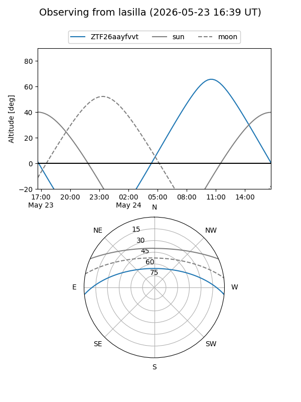
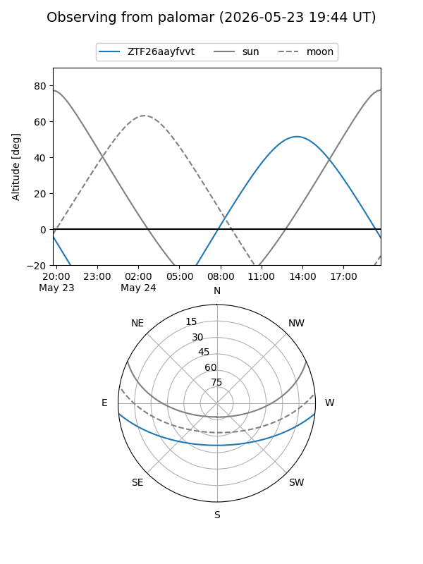

ZTF26aayfvvt
Target ZTF26aayfvvt at 2026-05-23 12:43
Aliases and brokers:
lsst-FINK: link
lsst-Lasair: link
lsst-ALeRCE: link
ztf-FINK: link
ztf-Lasair: link
ztf-ALeRCE: link
alt names
ZTF26aayfvvt (ztf,fink_ztf)
Coordinates:
equatorial (ra, dec) = 328.9275,-5.15608
equatorial (HMS+DMS) = 21:55:42.59,-05:09:21.90
galactic (l, b) = (52.6069,-42.79073)
Flags:
Photometry:
last ztfg=19.94
1 ztfg detections
Lightcurve
Visibility


Additional plots